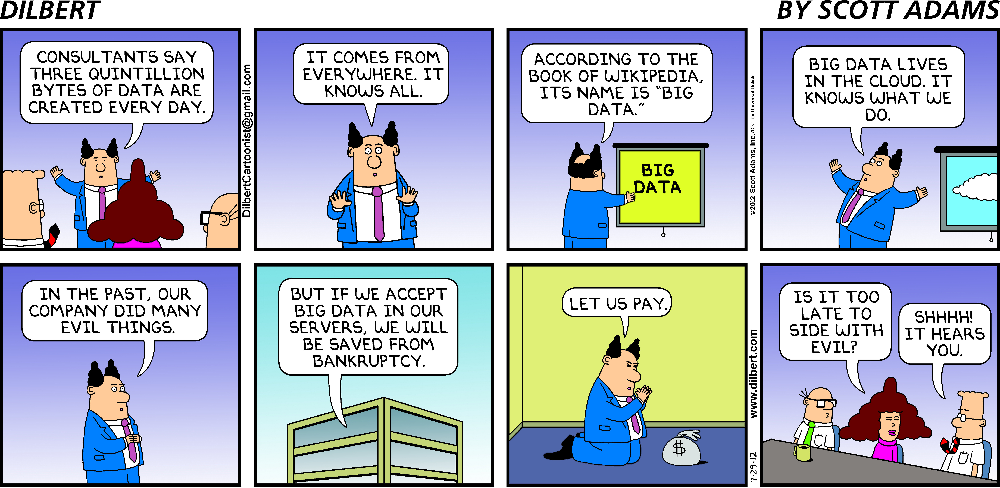
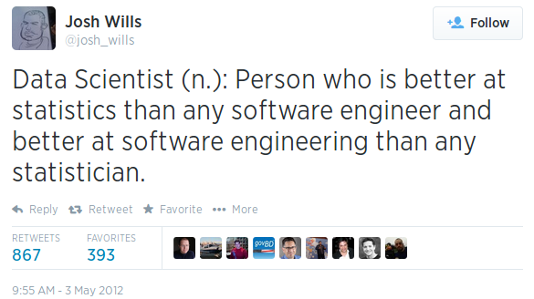
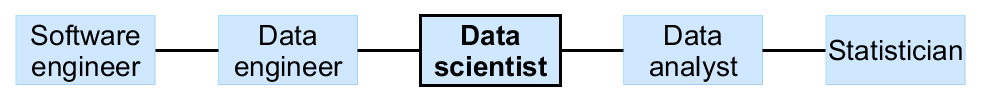
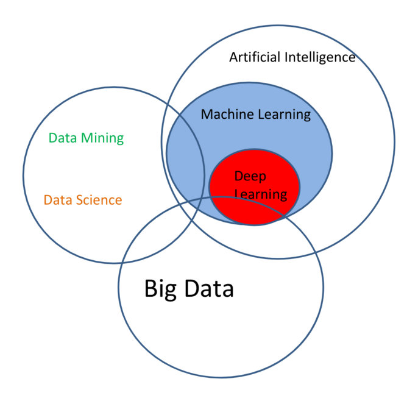
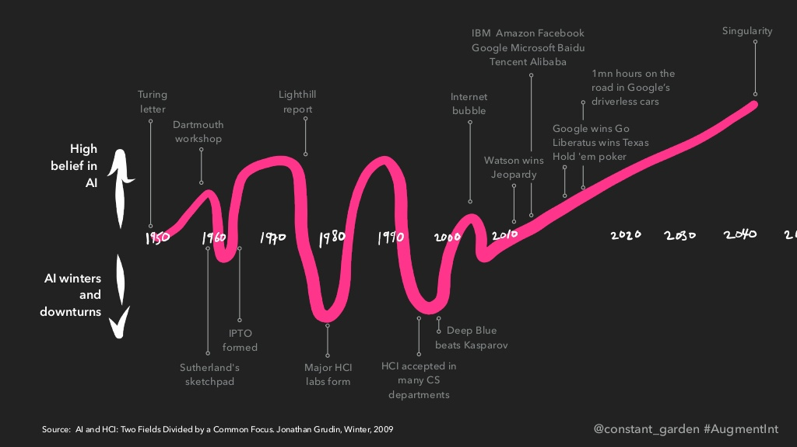
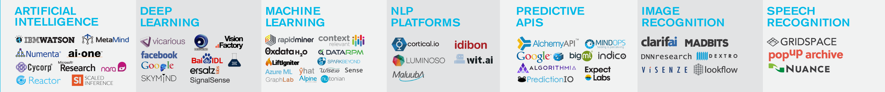
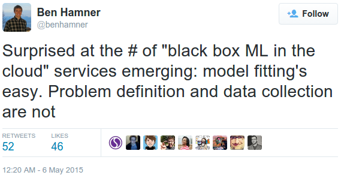

Demystifying Buzzwords
Tech + Data =
Buzzword Extravaganza

Big Data: An Enterprise Term

Big Data Knows All
Big Data... or just a Small Box?
Data Science: 2012 Edition
Data Science: Too Exclusive?

Data Science: 2018 Edition
...we can define data science as a field that deals with description, prediction, and causal inference from data in a manner that is both domain-independent and domain-aware, with the ultimate goal of supporting decisions.
- Yanir Seroussi,
Defining Data Science in 2018
AI: More Venn Diagram Fun?
AI: The Hype Won't Die
AI and I (2004-2018)
Machine Learning by Example

ML: A Solved Problem?
Machine Learning Map